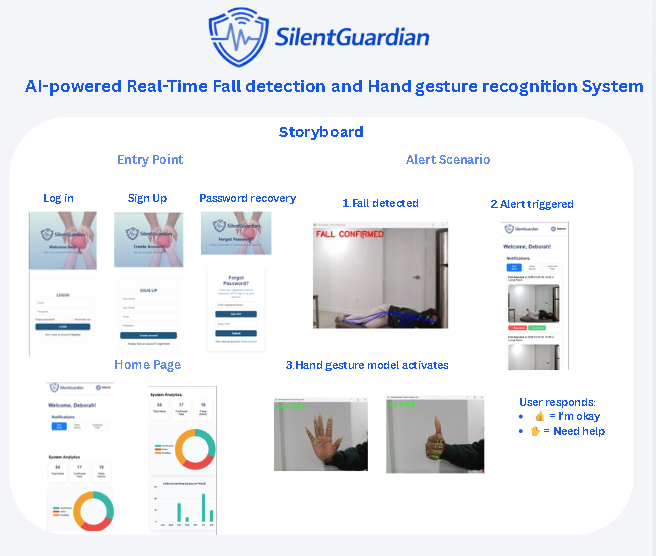

Software Engineering Student • Full-Stack Developer
Anique Ali
Building practical software across machine learning, backend systems, cloud-ready tools, and user-focused applications.
About
Building things that solve real problems.
Hi, I’m Anique, a Software Engineering student at Carleton University with experience in software development, machine learning, data analysis, and technical communication. I enjoy working on projects that combine practical engineering with clean, user-friendly design.
My recent work includes a fall detection system, a real-time firefighting drone simulator, a survey management web app, and data/reporting work through my coursework and internship experience.
Skills
Languages & Tools
Experience
Where I’ve worked
Teaching Assistant
Carleton University
Supported students with technical concepts, project feedback, and problem-solving across engineering coursework.
Program Innovation & Reporting Intern
Canadian Air Transport Security Authority
Worked with datasets, reporting workflows, BI testing, documentation, and operational analysis.
Work
Projects

Fall Detection System
End-to-end machine learning system for detecting falls, with backend API, frontend workflow, and event logs.
Firefighting Drone Simulator
Distributed Java simulator using UDP sockets, state machines, and real-time coordination between drones, scheduler, and fire subsystems.
Interrupt System Simulator
C-based Linux simulator for analyzing interrupt handling performance using trace files, process scheduling, and file I/O.
Contact
Let’s connect.
Feel free to reach out, I'd love to hear from you.